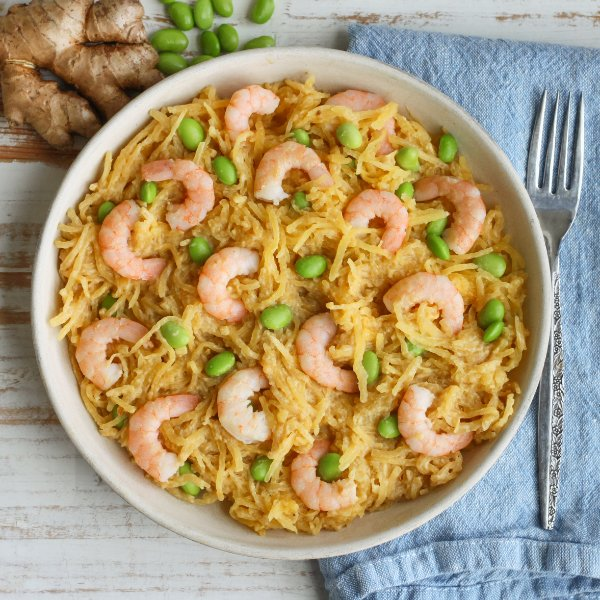

Creamy Sesame-Ginger Spaghetti Squash with Shrimp & Edamame

Nutrition (per serving)
701.3 kcalCalories
38.4 gProtein
60 gCarbs
38.1 gFat
Full nutrition table
| Calories | 701.3 kcal |
| Total fat | 38.1 g |
| Saturated fat | 5.7 g |
| Trans fat | 0 g |
| Cholesterol | 214.3 mg |
| Sodium | 1117.5 mg |
| Carbohydrates | 60 g |
| Fiber | 14.6 g |
| Sugars | 21.6 g |
| Protein | 38.4 g |
| Potassium | 1384.9 mg |
| Calcium | 375.3 mg |
| Iron | 6.1 mg |
| Vitamin A | 1224.1 IU |
| Vitamin C | 27.3 mg |
| Vitamin D | 3.4 IU |
Cookware
Ingredients
- 1 ⅓ cupsedamame
- 2 (1 inch) piecesginger root
- 1 ½ lbraw peeled shrimp, fresh or frozen
- 2 mediumspaghetti squash
- black pepper
- pure maple syrup
- rice vinegar
- salt
- soy sauce
- tahini
- toasted sesame oil
Steps
- Preheat oven to 500°F and place rack in the center position. Line a large baking sheet pan with aluminum foil to make cleanup easier (optional).
- Wash, dry, and trim each spaghetti squash, then halve lengthwise, and scrape out the seeds. Rub the inside of the squash with oil and season with salt. Arrange halves, cut-side down, on the baking sheet.2 medium spaghetti squash
2 tsp toasted sesame oil
1 tsp salt - Place squash in the oven (it doesn't have to be fully heated) and roast until tender, so a knife can easily pierce through the flesh, 20-25 minutes.
- Meanwhile, wash, dry, peel, and mince ginger. Place in a small bowl along with tahini, water, oil, vinegar, soy sauce, and maple syrup. Whisk to combine the sauce and set aside.2 (1 inch) pieces ginger root
⅓ cup tahini
¼ cup water
¼ cup toasted sesame oil
¼ cup rice vinegar
2 tbsp soy sauce
1 tbsp pure maple syrup - If using frozen shrimp, place them in a colander and run under cold water to thaw them slightly and remove any ice crystals. (If using fresh shrimp, skip this step.) Place the shrimp on a clean towel or paper towels and pat dry.1 ½ lb raw peeled shrimp, fresh or frozen
- When the squash has about 5 minutes left, preheat a large skillet over medium heat.
- Once the skillet is hot, add oil and swirl to coat the bottom. Add shrimp, salt, and pepper. Cook, stirring occasionally, until shrimp are just opaque, 2-3 minutes. Remove to a plate. (Set skillet aside for later use.)1 tbsp toasted sesame oil
½ tsp salt
¼ tsp black pepper - Meanwhile, place edamame in a clean colander and rinse under hot, running water (from the tap) to defrost; set aside to drain.1 ⅓ cups edamame
- Remove squash from the oven and allow to cool slightly, about 5 minutes.
- Scrape the inside of the squash with a fork to separate into spaghetti-like strands (use an oven mitt or towel to hold it with your other hand).
- Return skillet to medium heat. Once the skillet is hot, add sesame-ginger sauce, spaghetti squash, and edamame. Cook, tossing occasionally, until warmed through, 2-3 minutes. Remove from heat.
- To serve, divide spaghetti squash, shrimp, and edamame between plates or bowls. Enjoy!